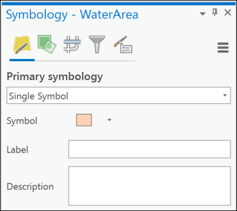
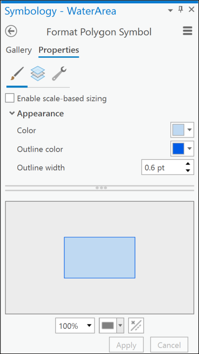

Styling and labelling your data
The background to styling and labelling data in GIS will be covered in the lecture segment at the beginning of the class, and the presentation and any other supporting materials will be available in Minerva. The lecture segment should help you to understand why you are doing these exercises. If you still aren’t sure, please ask Clare.
Learning outcomes
When you have completed this section of the workbook you should be able to
- explain how to symbolise data on a map so that it displays clearly and informatively to your audience
- demonstrate how to add appropriately located labels to the vector features on your map
Introduction
In the previous chapters you have created data and added data from other sources. Now you’ll see how to style, or symbolise, that data and label it appropriately to make a more informative map.
You have symbolised and labelled data in previous chapters, but this chapter goes through the options in more detail so that you have a wider range of techniques to choose from.
Downloading data
You should have kept the final project from the chapter on Finding data and adding it to GIS. If you haven’t, don’t worry - just download the file called FindingData.zip from Minerva and unzip it to your GIS folder (or the desktop if you are on the Virtual Windows Desktop).
You should have a folder called FindingData which contains a file called FindingData.aprx. Open that file in ArcGIS Pro by double-clicking on it and you should see a greyscale map of the Otley Chevin area.
Downloading BGS geology data from Digimap
Downloading BGS (British Geological Survey) geology data from Digimap is very similar to downloading Ordnance Survey data. Log in to Digimap and go to the Geology collection, then go to Geology Data Download.
- Search for
Otleyand select to go toOtley (Leeds) - Use the
Draw Rectangletool to select at least the area shown in the picture below.

- Select to download
Onshore Geology > 1:50 000 Geology - then
Add to Basket - In the basket select
- Format to download as
Shape - Layers as
All - give the download a name that you will remember, e.g. `OtleyGeology’
- Format to download as
Request Download
As in Ordnance Survey download you will need to wait for an email to tell you that the data is ready to download.
Once you have downloaded the data, unzip it to the FindingData folder, then add the following layers to the map so that they appear at the top of the Contents list. Note that these are the .shp files, not the .lyr.
ew069_bradford_linear.shpew069_bradford_bedrock.shp
Styling your data
When you first add a vector feature class to a map, Arc symbolises it with a single, random colour and doesn’t add any automatic information about what the features show. You need to apply styles to your data to differentiate features.

In this chapter we’ll symbolise the data that you’ve downloaded so that it becomes an informative 1:50 000 geological map.
The sections below show the general techniques to change colours, line styles, point symbols etc, but you have to decide for yourself how best to symbolise (or style) your data so that your audience can interpret and understand your map.
If you add a key to your map (you’ll be shown how to do this in the Layout chapter), it will show the colours and styles that you have set in this section.
Styling polygon features
We’ll start with polygon features as they are often the simplest to style, then we’ll move on to lines and points.
- In the contents pane select the layer that you want to symbolise, in this case the
ew069_bradford_bedrocklayer - Go to the
Appearancetab of the ribbon and click onSymbology
The Symbology panel should open on the right and will show the current settings - a single symbol with the colour of the layer.

Setting a single symbol for a layer
This is the simplest type of symbology and the one that ArcGIS Pro applies to your layers by default.
If you have a layer which contains a single type of feature then you can keep this type and just need to set it to your choice of colour.
Symbolising a layer as a single symbol in Arc
This video clip can be found in the module area of Minerva or in the full list of video clips.
- check that the correct layer is selected at the top of the symbology panel - see the image above - if not click on the correct layer in the contents pane.
- the
Primary symbologytype will already be set toSingle Symbol - to change the symbol click on the coloured symbol next to
Symbol - The pane will usually initially show the
Gallery. Try selecting something from here - your layer should change to whatever you select.

- To have more control over the symbol click on the
Propertiestab at the top of the pane

- In the Properties dialog try changing the colour of your feature to a different colour and change the outline colour to a darker shade of the same colour with a narrow width.
- This time the colour won’t change automatically on your map you’ll need to click on
Applyat the bottom of the pane.
All of the bedrock polygons on your map should now be the same colour and outline.
Save your map
Don’t forget to save your map at regular intervals. Arc can crash and you don’t want to loose the work you’ve already done.
Setting unique values for a layer
Setting unique values for a layer allows you to categorise your data. For example, if you have a single layer for bedrock and within that you have multiple types of bedrock, such as ‘limestone’, ‘sandstone’, ‘basalt’, you can set each type as a category and then symbolise each with a different colour.
This video clip can be found in the module area of Minerva or in the full list of video clips.
If you haven’t already checked the contents of your data then it’s a good idea to do that now so that you know which field you need to use to symbolise it on.
- zoom to layer so that you can see the whole of the layer
- go to the attribute table of the
ew069_bradford_bedrocklayer (right-click on it in the Contents and selectAttribute table
Which field will you symbolise on?
Have a look at the data in the table. One of the fields (columns) will contain data about the type of bedrock geology of that feature.
Which field is that? Make a note of the column heading then close the attribute table.
- Check that the correct layer is selected and if the symbology pane isn’t already open, open it now
- To change the Primary Symbology, drop down the box at the top of the pane and change it to
Unique Values

- Arc will usually use the first field in your feature class to categorise the data, which is unlikely to be the right one, so change
Field 1to the field you decided above you should use for the unique values - I would suggestLEX_Das it gives Formation names in plain English.
Arc should automatically set a colour scheme and give a colour to each category. In the case of the bedrock layer there are a lot of categories!
To change the colours and symbols:
- To change the colour scheme for all the colours at once, use the
Color Schemedropdown and pick another - clicking onFormat color schemetakes you to the Color Scheme Editor if you’re not happy with the choices.
To have more control over your symbols you can change them individually
- click on the colour patch for the
CHATBURN LIMESTONE FORMATIONcategory in the list of classes. - You should go to a familiar dialog - either the Gallery or the Properties.
- Go to the
Propertiesnow and set theColortoCretan Blue. If you hover over the colours in the selectors you are shown a tool tip with the name.
Once you click on Apply your layer should change to your choice of colour.
Note that I’ve chosen blue for limestone because in general Carboniferous limestone is coloured blue on the BGS maps.
Feel free to carry on and symbolise any of the other categories in a suitable colour.
Choosing colours for polygons
There is a lot of advice in the books on the reading list about choosing colours for maps.
In addition try the Color Brewer web site - it lets you play with colour combinations and is specifically aimed at people making maps.
Note that if you are going to be making a layer transparent then you will probably find that it is best to choose strong colours, such as
Steel Blue, for your polygons. They will fade when you apply transparency.
Removing feature categories that are not required
There are a lot of other feature types available. If you don’t need these for your map it is possible to remove them.
- Use the control key to click on multiple feature categories - in this case click on
MARCHUP GRIT, MIDDLETON GRIT, NESFIELD SANDSTONE - then right-click and select
Remove.
Those feature types will be removed from the list and from the key in the Contents pane.
You will notice that they aren’t actually removed from your map, though. Instead of an individual colour any feature which doesn’t belong to a category in your symbology will be coloured with the symbol next to <all other values> in the Contents.
Removing the All other values heading
If you have feature categories that aren’t individually symbolised but show as <all other values>, or if you just want to tidy up your key by removing the All other values heading, do the following
- In the classes pane of the Symbology pane click on
Moreabove the table - Deselect
Show all other values
Controlling transparency with the Color Editor
There are a lot of settings that you can use and you should investigate them for yourself, but one of the most useful is the Color Editor.
If you set transparency for a layer, as you’ve been shown previously, then everything in that layer is transparent - the outlines as well as the fill. Using the Color Editor you can make just the fill transparent.
- Click to edit the symbol for the
MILLSTONE GRIT GROUP - Click on the patch next to
Colorand selectDark Oliveniteas the fill colour - then click on
Color properties
You should find that the Color Editor opens.

- There you can alter the
Transparencyusing the lowest colour bar, e.g. set it to40%and see what difference that makes when you clickOK > Apply.
If there is no layer behind this one you may not see much difference, but if there is you should be able to see it now - you may need to Zoom to Layer on the contours layer to see the background.
Change the colour of some other bedrock polygons
Use the instructions above to colour the following layers, using your own choice of colours and setting transparency for the fills
ADDINGHAM EDGE GRIT; LONG RIDGE SANDSTONE; EAST CARLTON GRIT; GUISELEY GRIT.
Don’t worry about doing all of them at the moment - I’ll be showing you another way to do the whole lot at once later.
Remember to save your project at regular intervals.
Styling line features
Symbolising or styling line features is basically the same as symbolising polygon features so refer back to the instructions for those too, but there are some extra things to think about in addition to choosing colours for fill and outline.
- start by turning off all of the layers in the contents and turning on the
ew_069_bradford_linearlayer so that you can see what you are doing. - You may also want to clear the reference scale so that you can see the lines at any scale for now
- If you have a look in the attribute table there is a field called
FEATURE_Dwhich contains the type of feature. - Use the
FEATURE_Dfield to create Unique Values for this layer to set random colours.
Symbolising dashed lines
You may well need to set dashed lines on a map, for example if you are creating a geological map you may need to add inferred boundaries. The data you are using here includes the categories Coal seam, inferred, Fault, inferred and `Mineral vein, inferred’. These will all be symbolised as dashed lines.
The simplest way to add a dashed line is as follows:
- Open the symbology pane and check the
ew069_bradford_bedrocklayer is selected - Click on the line symbol next to
Coal seam, inferred - Go to the Gallery and scroll down to look for
Dashed 4:4and click on it1 - Coal seams will usually be symbolised as a black line, so if the colour isn’t black change it to that in the Properties now
- Using the gallery will also have changed the line width to
0.4 pt. It is usually a good idea to keep geological lines relatively thin, but for now change this to1 pt. - Click
Apply
You can also set up the dashes manually. This also allows you to edit the style that you’ve set from the gallery if it doesn’t do quite what you want it to.
- Click on the line symbol next to the
Mineral vein, inferredin the list of classes. - In the
Format symboldialog go to thePropertiestab - click on the
Layersbutton - you’ll probably need to use the tooltips to find this - select a colour such as
Raw UmberunderAppearance - drop down
Dash effectto see the options, and select aDash typefrom the drop down list. - Now you can change the numbers in the
Dash templateto alter the spaces and dashes for your lines - the first number applies to the length of the dash, the second to the spaces - try setting it to2 10and use thetabkey to move out of the box to see what it looks like. Then change it to6 6to see the difference
- When you are happy with the line click on
Apply. There are only a couple of these on the map so you might not see much difference.
Symbolising lines with “decoration”
Some lines need extra symbols to show more information. Decorations on lines can include but are not limited to
- the “ticks” to show downthrow on faults
- little triangles or “barbs” which show thrust faults
- crosses or arrows to show fold axes
For this example we’ll symbolise the Fault, inferred with ticks, as well as dashes.
The simplest way to apply symbols on lines is to check for existing line styles in the gallery. If you can’t find what you want try downloading extra styles from ESRI and see if that helps. You’ll see how to do this in a later section.
If you can’t find the symbol you need then you’ll need to set it up for yourself.
- Click on the line symbol next to
Fault, inferredin the list of classes. - Open the
Format line symbolpane and go to theProperties - Click on the spanner symbol - if you hover over it you’ll see that it’s
Structure - Click to
Add symbol layer > Marker layer- this adds a symbol on top of your line - To change the symbol click on the
Layersbutton (use tooltips!) and check that theShape markeris selected at the top. - For this example click on the small button next to Form which has 3 coloured shapes on it then select the vertical line - as shown in the picture below. You could also select a symbol from Style or Font instead.

Now you can experiment with the settings until the line looks as you require in the window below.
- make the vertical line width so that it looks the same as the main line - e.g.
2 ptand a bit shorter, e.g.4 pt - try changing the
Offset Distance > Offset Yuntil the vertical line sits on top of the horizontal line - Change the colour of both the vertical line and the main line to the same dark green, e.g.
Fir Green - To change the spacing of the vertical lines on the line
- drop down the
Marker placementsubheading - change the
Placement templatenumber, e.g. make it50to spread the symbols out
- drop down the
- Once you are happy with your symbol click
Applyand have a look at it on the main map. You may want to make more changes before you are happy with it.
Once you have symbolised these lines turn the other layers back on on your map and save the project.
You should reset the reference scale to 1:50 000 as this is the scale of the data that you are using.
Styling point features
The BGS geological data doesn’t include any point data so I have created a layer from OpenStreetMap data that we can use instead for this exercise.
- You can download the shapefile from Minerva as
PointData.zipand unzip it to your project folder. - Add the
Placeshapefile to the top of the Contents of your map and have a look at the attribute table. - In particular have a look at the contents of the
placecolumn. This contains data on the types of place that are included. - Use
Unique Valuesfor the symbology and set it so that each type of place has a different colour symbol. Stop All other values from showing.
Your places will be symbolised as a series of spots of different colours.

In the same way that you symbolised the polygons and lines click on the points next to the entries in the
Classeslist and try out the options both from the Gallery and the Properties. There are no detailed instructions here because it is so similar to previous sections.
Finding and using additional ArcGIS Pro styles
There are only a relatively limited range of symbols available in ArcGIS Pro when you first install it and sometimes you’ll need more.
ESRI provide further styles via a gallery. Unfortunately it doesn’t seem to be possible to preview the symbols, but there are symbol sets such as Ordnance Survey and Geology 24k which should be helpful.
To install more geological symbols in your project:
- Download the
Geology 24kstyle from the Gallery by clicking on it in the list to go to the individual page, then clicking on theDownloadbutton. You should end up with a.stylxfile - Move or copy the stylx file into your map project folder, e.g.
FindingData - Go to the
Inserttab of the ribbon - Click on
Addin theStylesgroup and select toAdd Style - Navigate to where you saved the
.stylxfile and select it. You may get a message about the style not being the correct version, if you do click to allow it to update
Once you’ve done this you should find that you have a lot more styles available to you in the Gallery.
- Open the symbology panel for the
ew069_bradford_linearlayer - click on the line symbol next to
Axial plane trace of major anticline - Go to the Gallery and scroll down to look for the section of
Geology_24K_enstyles - Under that look for
Anticline - Approximately locatedand click on it. You can also use the search box at the top to search forAnticline
The end result should be a line with small arrows pointing outwards at intervals.
These symbols are those used as standard by the United States Geological Survey rather than those used by the British Geological Survey so you may not always find what you need. It is possible to create your own symbols, but you’ll find out more about that in level 2.
Styling layers with a layer file
When you added the geology layers to your project you may have noticed that in addition to the shapefiles (.shp) there were also files that ended with the extension .lyr but had the same names as the shapefiles. These are Layer files and can be used to style the data layers which are in the shapefiles.
There are two possible ways to use layer files to symbolise the shapefiles and it is your choice which one you use. Both will give the same final result.
This video clip can be found in the module area of Minerva or in the full list of video clips.
Add the data layer first
You already have the data layers in your map so we’ll start with this method.
- Select the
ew069_bradford_bedrocklayer in the Contents - then click on the
Symbologybutton on theAppearancetab of the ribbon - Click on the menu icon (three horizontal lines) at the top right of the Symbology panel and select
Import symbology...to open the geoprocessing tool

- Your current layer should already be entered under
Input Layer - Click on the folder button next to the
Symbology Layerdrop down and navigate to the location of the layer files. There should be a layer file that matches your shapefile -ew069_bradford_bedrock.lyr - Click on the layer file, then
OK - It’s a good idea to set
Update Symbology Ranges by DatatoUpdate Rangesso that only the symbology you actually need is used. This will make creating a legend much simpler! - Then
Runthe tool.
The data should now be symbolised according to BGS categories as shown below.
Repeat the steps above to symbolise the linear geology layer.

Add the layer file first
- If you already have the bedrock and linear layers in your project turn them off in the contents pane
- Go into the Catalog and this time instead of adding the .shp files to your map add the
.lyrfiles
If it works immediately and you can see a fully symbolised geological map then that’s a bonus and you don’t need to repair the data source.
If, however, you get the dreaded red exclamation marks next to your layers in the contents and nothing new on the map then you need to tell the layer file where to find the data on your computer. It doesn’t mean you’ve done anything wrong, you just need to know how to solve it.

Repairing broken file links
This video clip can be found in the module area of Minerva or in the full list of video clips.
To check the name of the file that you’ll need to locate:
- open the layer properties in the contents by right-clicking on the broken layer and go to the
Sourcetab - under
Data sourceyou will see which file Arc is looking for

Once you know the name of the file you need, and where Arc thinks it will be located, do the following to repair the link:
- from the same properties tab
Set Data Source - Navigate to the file that you need then
OK > OK
If you’re lucky all of the missing layers will appear and your map will look like the map above, but if you’re not you’ll need to repeat the process for each layer.
If you can’t find the data then you may need to try downloading it and unzipping it again. It may mean that you deleted or moved the source file.
Making the layer transparent
Once you’ve applied the layer file to your shapefile you can see the geology, but it isn’t transparent so you can’t see the base map through it. To do that you need to make the bedrock layer transparent, following the instructions you were given in the first chapter.
Your final map should look something like the map below when you zoom in. The background map is rather pixellated - you can download a 1:50 000 background map such as VectorMap District Raster from Digimap to replace the VectorMap Local Raster and that will look better at this scale.

Save this map - you’ll be using it again in the section below on labelling your data.
Labelling your data
If you look at any map you’ll be able to see that attributes from the attribute table have been used to add labels which are essential to the understanding of the map.
Once you have information in your attribute tables it is really easy to add labels to your features. You may not need to add them to all layers, but they can really help interpretation. For example, if you look at British Geological Survey maps they add symbols or letters to each rock polygon which are then included in the key and make it easier to spot which symbol is which. Points can be labelled to show location names, or dip angle and names can be added to lines, such as “Moine Thrust” on the appropriate thrust fault.
Adding simple labels
You should have a bedrock geology layer in your FindingData map which you symbolised with the BGS layer styles. You’ll use that to try out labelling polygons.
This video clip can be found in the module area of Minerva or in the full list of video clips.
- Select the
ew069_bradford_bedrocklayer in the Contents - Start by looking at the attribute table. You need a short abbreviation with which to label each bedrock polygon on your map. Which attribute contains a short abbreviation for the rock formation name?
- With the correct layer selected click on the
Labelingtab of the ribbon

- Click on the
Labelbutton on the far left of the ribbon
Arc will add labels to your map but they will be from the first field in your feature class, which is unlikely to be the correct one and could be a load of apparently random numbers!
To select the correct field:
- Use the dropdown next to
Fieldon the left of the ribbon to select the field that contains the labels you wish to use - in this case I suggest you use theLEXfield.
You should find that the labels from the field you’ve chosen appear on your map - be patient it can take Arc a while to draw them.

Once you have the basic labels you can use the other tools on the Labeling ribbon to change the font, size, colour or placement.
Alternatively you can use the Label Class panel
- on the Labelling ribbon click on the small downwards arrow at the lower right of either the Text Symbol or the Label Placement group.

Try out some of the options on the
SymbolandPositiontabs to see what they do.
-
If you don’t find the dashed lines then the styles may not be installed for you. Instructions for adding additional ArcGIS Pro Styles are in a separate section. ↩